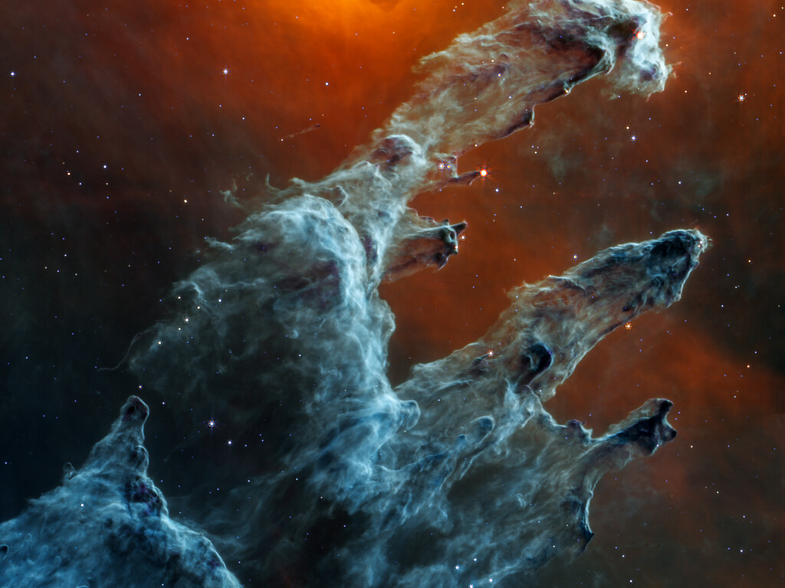

Ao longo das bordas dos pilares há linhas onduladas que se parecem com lava. São ejeções de estrelas que ainda estão se formando. Estrelas jovens disparam periodicamente jatos que podem interagir dentro de nuvens de material, como esses grossos pilares de gás e poeira. Isso às vezes também resulta em choques de proa, que podem formar padrões ondulados como um barco faz enquanto se move através da água. Estima-se que essas jovens estrelas tenham apenas algumas centenas de milhares de anos e continuarão a se formar por milhões de anos
Embora possa parecer que a luz infravermelha próxima permitiu que Webb "perfurasse" o fundo para revelar grandes distâncias cósmicas além dos pilares, o meio interestelar fica no caminho, como uma cortina desenhada.
Esta é também a razão pela qual não há galáxias distantes nesta visão. Essa camada translúcida de gás bloqueia nossa visão do universo mais profundo. Além disso, a poeira é iluminada pela luz coletiva da "festa" lotada de estrelas que se libertaram dos pilares. É como estar em uma sala bem iluminada olhando por uma janela a luz interna reflete no painel, obscurecendo a cena do lado de fora e, por sua vez, iluminando a atividade na festa dentro.
Crédito:
NASA, ESA, CSA, STScI; J. DePasquale, A. Koekemoer, A. Pagão (STScI).